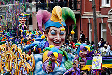
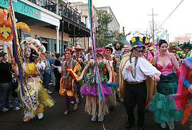
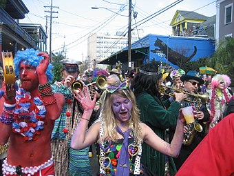
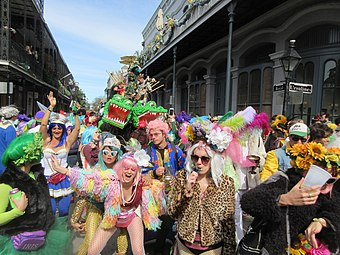

The holiday of Mardi Gras is celebrated in all of Louisiana, including the city of New Orleans. Celebrations are concentrated for about two weeks before and through Shrove Tuesday, the day before Ash Wednesday (the start of lent in the Western Christian tradition). Usually there is one major parade each day (weather permitting); many days have several large parades. The largest and most elaborate parades take place the last five days of the Mardi Gras season. In the final week, many events occur throughout New Orleans and surrounding communities, including parades and balls (some of them masquerade balls). The parades in New Orleans are organized by social clubs known as krewes; most follow the same parade schedule and route each year. The earliest-established krewes were the Mistick Krewe of Comus, the earliest, Rex, the Knights of Momus and the Krewe of Proteus. Several modern "super krewes" are well known for holding large parades and events (often featuring celebrity guests), such as the Krewe of Endymion, the Krewe of Bacchus, as well as the Zulu Social Aid & Pleasure Club—a predominantly African American krewe. Float riders traditionally toss throws into the crowds. The most common throws are strings of colorful plastic beads, doubloons, decorated plastic "throw cups", and small inexpensive toys. Major krewes follow the same parade schedule and route each year. While many tourists center their Carnival season activities on Bourbon Street, major parades originate in the Uptown and Mid-City districts and follow a route along St. Charles Avenue and Canal Street, on the upriver side of the French Quarter. Walking parades - most notably the Krewe du Vieux and Chewbacchus - also take place downtown in the Faubourg Marigny and French Quarter in the weekends preceding Mardi Gras Day. Mardi Gras Day traditionally concludes with the "Meeting of the Courts" between Rex and Comus
In 1979, the New Orleans police department went on strike. The official parades were canceled or moved to surrounding communities, such as Jefferson Parish, Louisiana. Significantly fewer tourists than usual came to the city. Masking, costuming, and celebrations continued anyway, with National Guard troops maintaining order. Guardsmen prevented crimes against persons or property but made no attempt to enforce laws regulating morality or drug use; for these reasons, some in the French Quarter bohemian community recall 1979 as the city's best Mardi Gras ever. In 1991, the New Orleans City Council passed an ordinance that required social organizations, including Mardi Gras Krewes, to certify publicly that they did not discriminate on the basis of race, religion, gender or sexual orientation, to obtain parade permits and other public licenses. Shortly after the law was passed, the city demanded that these krewes provide them with membership lists, contrary to the long-standing traditions of secrecy and the distinctly private nature of these groups. In protest—and because the city claimed the parade gave it jurisdiction to demand otherwise-private membership lists—the 19th-century krewes Comus and Momus stopped parading. Proteus did parade in the 1992 Carnival season but also suspended its parade for a time, returning to the parade schedule in 2000. Several organizations brought suit against the city, challenging the law as unconstitutional. Two federal courts later declared that the ordinance was an unconstitutional infringement on First Amendment rights of free association, and an unwarranted intrusion on the privacy of the groups subject to the ordinance. The US Supreme Court refused to hear the city's appeal from this decision. Today, New Orleans krewes operate under a business structure; membership is open to anyone who pays dues, and any member can have a place on a parade float.
nknown to the participants and local leaders at the time, the 2020 Carnival season (with parades running from January through Mardi Gras Day on February 25) coincided with increasing spread of coronavirus disease 2019 (COVID-19) in the United States as part of a global epidemic.15 At the time, the disease was actively being dismissed as a major public health threat by President Donald Trump and his administration.16 As such, scrutiny over large public gatherings had yet to emerge, while scrutiny over international travel primarily placed an emphasis on restricting travel from China—the country from which the disease originated.17 15 The first case of COVID-19 in Louisiana was reported on March 9, two weeks after the end of Mardi Gras.18 Subsequently, the state of Louisiana saw a significant impact from the pandemic, with New Orleans in particular seeing a high rate of cases. Louisiana State University (LSU) associate professor Susanne Straif-Bourgeoi suggested that the rapid spread may have been aided by Mardi Gras festivities.19 20 Researchers of the University of Louisiana at Lafayette determined that Louisiana had the fastest growth rate of cases (67.8%, overtaking New York's 66.1% growth) in the 14 days since its first reported case than any region in the entire world.21 19 Mayor LaToya Cantrell stated that she would have cancelled Mardi Gras festivities had she been provided with sufficient warning by the federal government, and criticized the Trump administration for downplaying the threat.15 22 Amid continued spread of COVID-19 across the country, in early-November 2020 Cantrell stated that celebrations in 2021 would have to be "something different", as Mardi Gras could not be canceled outright since it is a religious observance. A sub-committee of the Mardi Gras Advisory Committee focused on COVID-19 proposed that parades still be held but with strict safety protocols and recommendations, including enforcement of social distancing, highly recommending the wearing of face masks by attendees, discouraging "high value" throws in order to discourage crowding, as well as discouraging the consumption of alcohol, and encouraging more media coverage of parades to allow at-home viewing.23 As parades and large gatherings were canceled for the 2021 Mardi Gras season in New Orleans, some locals spent extra effort to decorate their homes and front yards for the holiday. Some nicknamed this "Yardi Gras".24 On November 17, 2020, Mayor Cantrell's communications director Beau Tidwell announced that the city would prohibit parades during Carnival season in 2021. Tidwell once again stressed that Mardi Gras was not "cancelled", but that it would have to be conducted safely, and that allowing parades was not "responsible" as they can be superspreading events.25 26 This marked the first large-scale cancellation of Mardi Gras parades since the 1979 police strike.27 28 Other krewes subsequently announced that they would cancel their in-person balls, including Endymion and Rex (who therefore did not name a King and Queen of Mardi Gras for the first time since World War II).29 27 28 On February 5, 2021, in response to continued concerns surrounding "recent large crowds in the Quarter" and variants of SARS-CoV-2 as Shrove Tuesday neared, Mayor Cantrell ordered all bars in New Orleans (including those with temporary permits to operate as restaurants) to close from February 12 through February 16 (Mardi Gras), and prohibited to-go drink sales by restaurants, and all packaged liquor sales in the French Quarter. To discourage gatherings, pedestrian access to Bourbon Street, Decatur Street, Frenchmen Street between 7:00 p.m. and 3:00 a.m., and Claiborne Avenue under the bridge, was restricted by checkpoints to those accessing businesses and homes within the areas. Mayor Cantrell stated that she would "rather be accused of doing too much than doing too little." The move caught some establishments off-guard, as they had been preparing for and anticipating business on Mardi Gras.30 31 Parades were allowed to return for 2022.32 In December 2021, the city announced that parades would have modified routes in 2022 due to New Orleans Police Department staffing shortages.33 34 On January 6, 2022, Mayor Cantrell stated during a kickoff event that "without a doubt, we will have Mardi Gras in 2022", citing high COVID-19 vaccination rates, and customarily asked residents to "do everything that we know is necessary to keep our people safe." The Krewe de Jeanne D'Arc ceremonially led their parade with a group of marchers in plague doctor outfits and brooms, tasked to "sweep the plague away". The city announced COVID-19 protocols for Mardi Gras 2022 in February 2022, which requires, at a minimum, all participants in a parade (including marchers, performers, and those a riding a float) to present proof of vaccination or a negative COVID-19 test from within the past 72 hours. Some krewes chose to not accept negative tests at all, while some krewes (such as the Krewe of Muses, which also announced plans to have COVID-19 rapid tests as throws) had already announced vaccination requirements for parade participants ahead of the official requirement. Despite the presence of Omicron variant, city health director Jennifer Avegno stated that she was confident Mardi Gras could be conducted in a more normal fashion over 2021   
Cantrell was inaugurated as mayor on May 7, 2018, the first woman to hold the position in the city's history. Once in office, she established a new Office of Youth and Families, with the goal of creating a strategic plan to address families in crisis in the city.
Cantrell also founded a Gun Violence Reduction Council, tasked with finding solutions to violent crime. Starting with a push to rededicate hotel taxes collected within the city for city use, Cantrell has focused on her #fairshare initiative to improve city infrastructure, public transportation, public parks, and green spaces. As part of that initiative, in October 2018 the City of New Orleans filed a lawsuit against four opioid manufacturers and distributors. During the 2019 session of the Louisiana Legislature, Cantrell negotiated the Fair Share Agreement with Governor John Bel Edwards and city, state, and tourism officials.
The agreement secured $50 million in upfront funding for the city's infrastructure needs as well as $26 million in annual recurring revenue for the city. Following the approval of the Fair Share Agreement, New Orleans voters approved 3 of the 4 proposals Cantrell and the City Council put on the ballot in the 2019 general election. Voters approved a $500 million bond sale and a tax on short-term rental properties, as well the establishment of a Human Right Commission under the New Orleans Home Rule Charter.